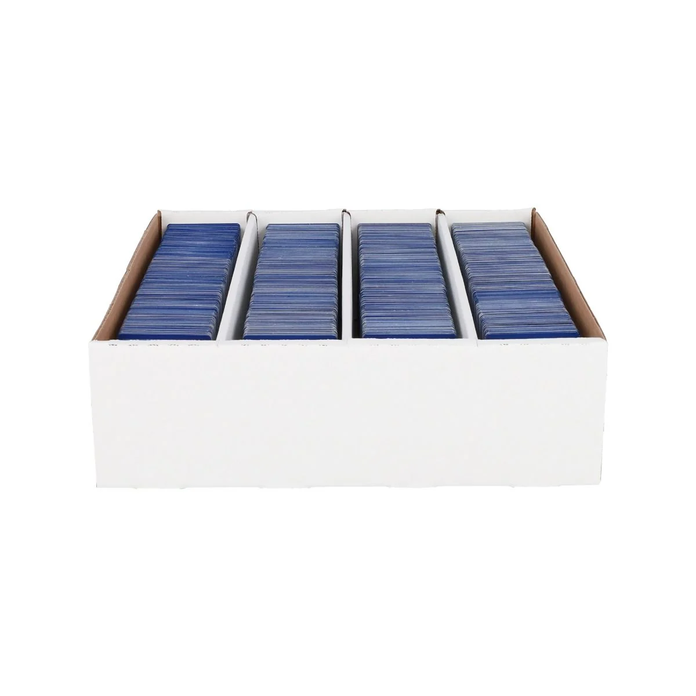
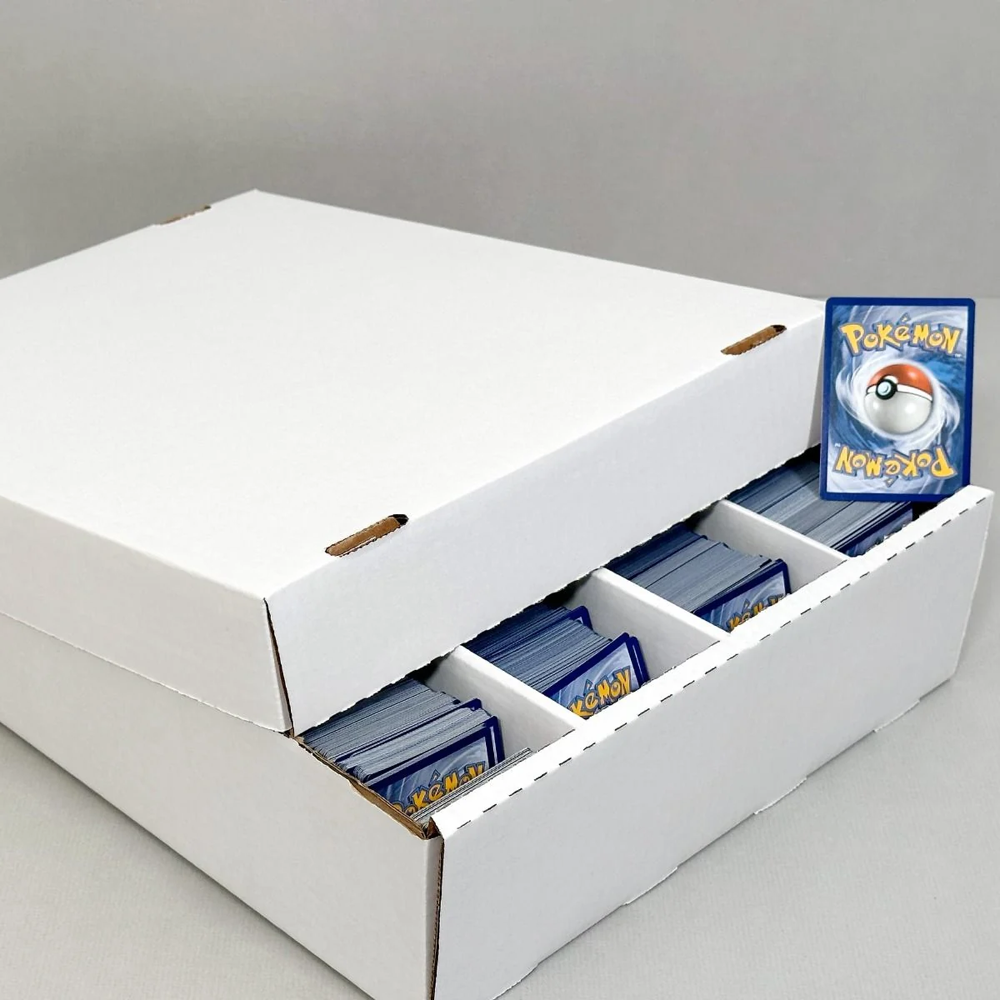
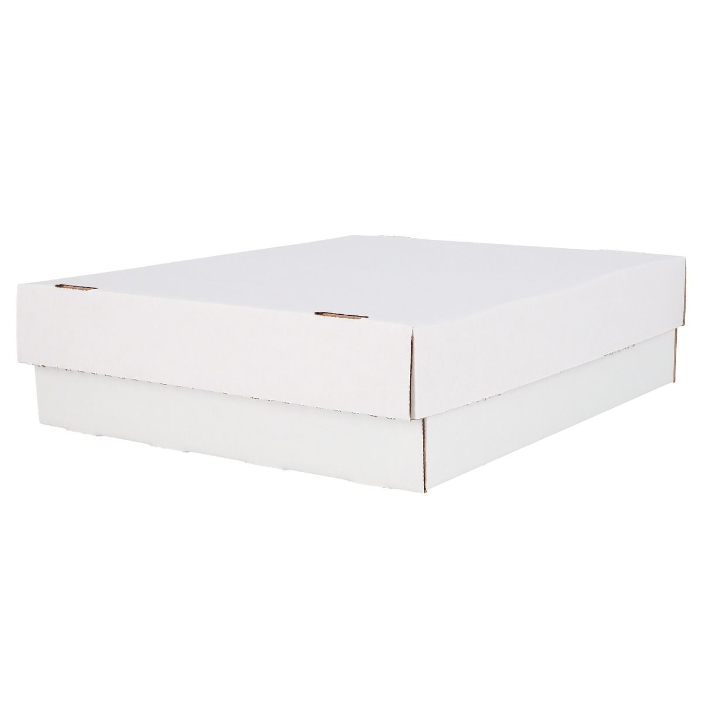
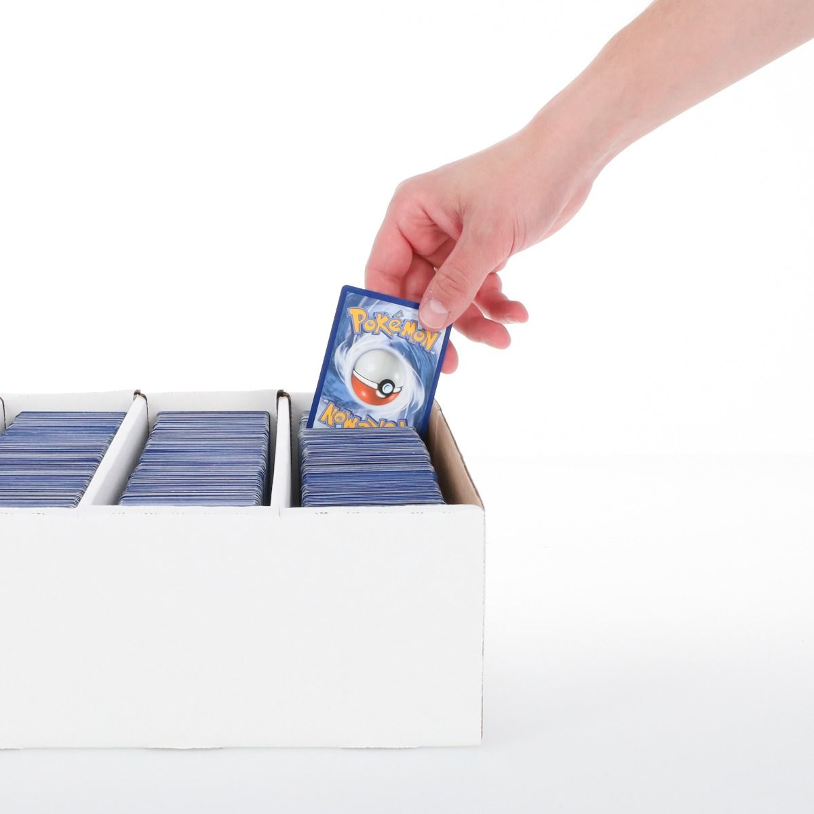
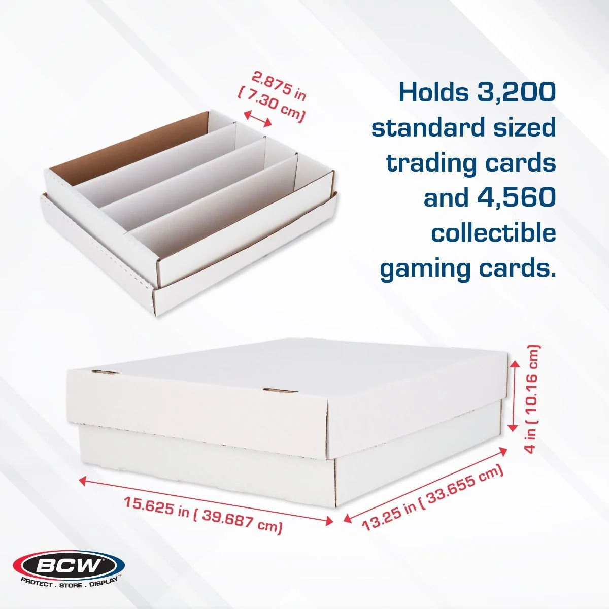

Four easy-to-browse rows
Keep sets, teams, years or games separated with optional card dividers.
BCW MONSTER STORAGE BOX · SKU 1-BX-MON
Give your trading cards a place to live. Four organized rows, a fitted lid and room for up to 3,200 standard-sized cards.
An independent product guide from MYistores LLC. Not BCW's official website.

BUILT FOR COLLECTORS
From baseball cards to trading card games, the Monster Box organizes large collections without requiring a shelf full of small boxes.

Keep sets, teams, years or games separated with optional card dividers.

Cover your cards between sorting sessions to help keep dust away.

Suitable for loose and many sleeved standard cards. Thick rigid holders require other storage options.
THE DETAILS
The Monster Box is designed for standard trading cards, not rigid toploaders, magnetic holders or graded slabs. Sleeves can reduce the actual card capacity.
Specifications sourced from BCW. Capacities are approximate and depend on card thickness and sleeves.

CHOOSING YOUR STORAGE
Loose sports cards, standard-sized trading cards, sorting by set or team, and bulk card collections.
Toploaders, magnetic holders, graded slabs and other thick rigid card cases.
COMMON QUESTIONS
The box is constructed from white corrugated cardboard with a 200 lb test strength.
Approximately 3,200 standard-sized trading cards or up to 4,560 collectible gaming cards, depending on card thickness and storage format.
Standard-sized sleeved cards can fit, although sleeves reduce capacity. The box is not intended for toploaders or one-touch magnetic holders.
Exterior dimensions are approximately 15⅝ × 13¼ × 4 inches. The manufacturer FAQ lists interior dimensions of approximately 14 × 12¾ × 3¾ inches.
Yes. The box ships flat and folds along pre-scored lines. No glue or tape is required for normal assembly.
Baseball, football, basketball and hockey cards, as well as standard-sized collectible gaming cards such as Pokémon, Magic: The Gathering and Yu-Gi-Oh!.
The manufacturer describes the assembled box as stackable with similar storage boxes. Avoid overloading and use care when stacking.
The manufacturer FAQ states that the box is not acid-free. For long-term preservation, consider appropriate archival sleeves or other archival storage materials.
Yes. A fitted cardboard lid is included to help protect stored cards from dust and light.
This independent retailer guide links to CollectibleSupply.com for purchasing. Check the retailer listing for current availability, shipping and pricing.
Yes. Standard-sized Pokémon cards fit, and the number held depends on whether they are sleeved.
No. It is not designed for rigid toploaders, one-touch magnetic holders or graded slabs.
READY TO ORGANIZE?
Shop through CollectibleSupply.com, operated by MYistores LLC. Current pricing, shipping options and inventory are displayed at checkout.
Shop at CollectibleSupply.com →Before publishing, replace this store-homepage link with the exact SKU 1-BX-MON product URL for accurate conversion tracking.